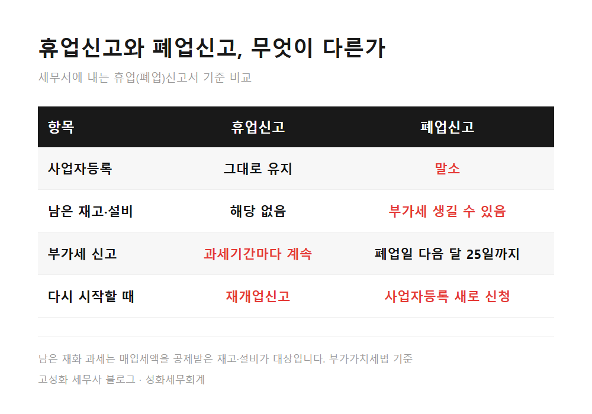
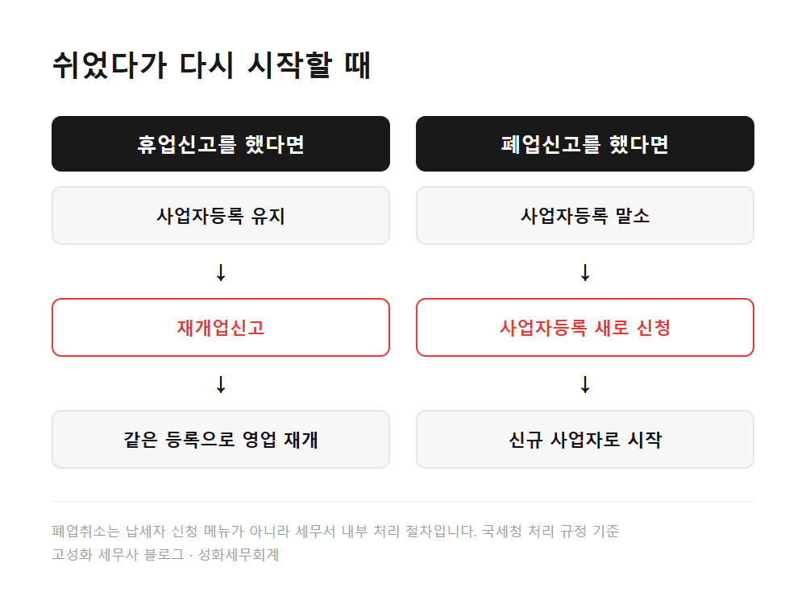
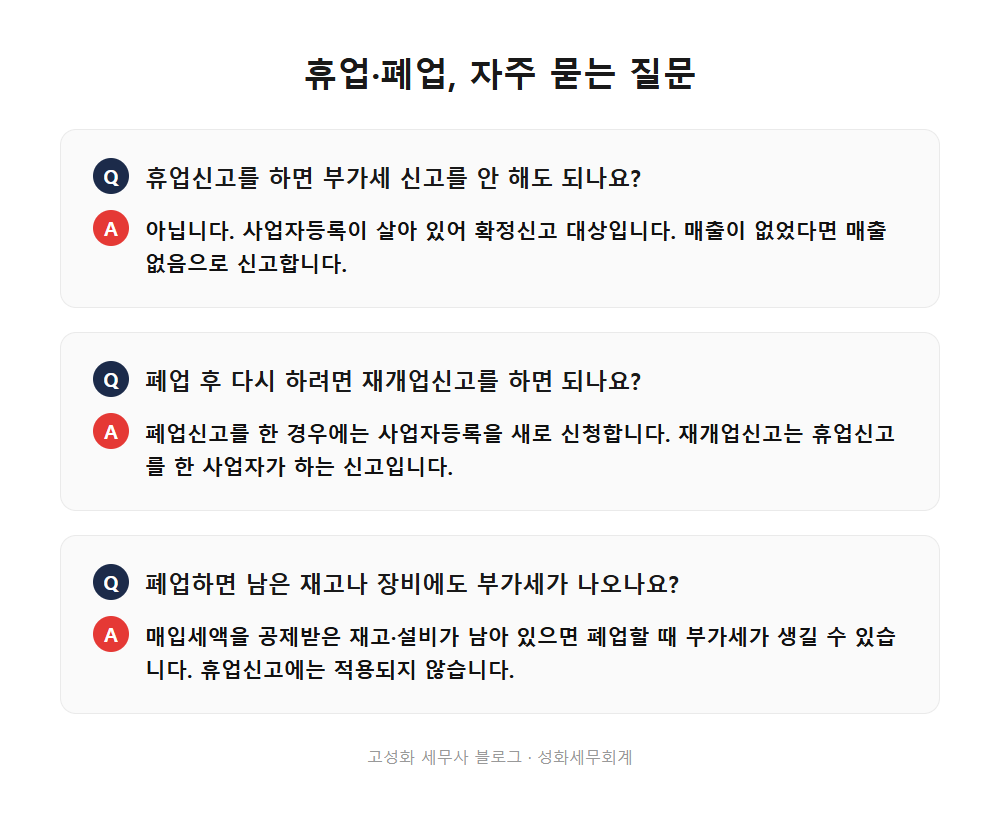

휴업신고 폐업신고 차이, 다시 시작할 때 절차가 다릅니다

휴업신고를 했다면 다시 시작할 때 세무서에 재개업신고를 하면 됩니다.
폐업신고를 했다면 재개업이 아니라 사업자등록을 처음부터 다시 신청해야 합니다.
신고서는 한 장으로 같아 보여도, 돌아오는 길은 처음부터 다르게 생겼습니다.
매출이 끊겨서 접을지 쉴지 고민 중인 사장님,
- 휴업신고와 폐업신고는 같은 신고서, 다른 결과입니다
- 휴업은 재개업신고, 폐업은 신규 사업자등록으로 돌아옵니다
- 휴업 중에도 부가세 신고는 남아 있습니다
한눈에 보기



자주 묻는 질문
휴업신고를 하면 부가세 신고를 안 해도 되나요?
아닙니다. 휴업신고를 해도 사업자등록이 살아 있어 부가가치세 확정신고 대상입니다. 휴업 기간에 매출이 없었다면 매출 없음으로 신고합니다.
폐업신고를 했다가 다시 사업을 하려면 재개업신고를 하면 되나요?
폐업신고를 한 경우에는 재개업신고가 아니라 사업자등록을 새로 신청합니다. 재개업신고는 휴업신고를 한 사업자가 영업을 다시 시작할 때 하는 신고입니다.
폐업하면 남은 재고나 장비에도 부가세가 나오나요?
매입할 때 부가세를 공제받은 재고나 설비가 폐업 시점에 남아 있으면, 폐업할 때 그 재화를 자기에게 공급한 것으로 보아 부가세가 생길 수 있습니다. 휴업신고에는 이 규정이 적용되지 않습니다.
정리하면
휴업신고를 하면 재개업신고로 돌아오고, 폐업신고를 하면 사업자등록을 새로 신청해서 돌아옵니다.
폐업할 때는 공제받은 재고와 설비에 부가세가 생길 수 있고, 휴업 중에도 부가세 신고는 남아 있습니다.
신고서 체크 하나를 두고 상담까지 받아야 하나 싶으실 수 있습니다.
그런데 그 체크 하나로 남은 설비의 부가세와 다시 시작하는 절차가 정해집니다.
어느 쪽으로 할지는 남은 재고와 설비, 쉬는 동안 생길 거래를 같이 놓고 봐야 알 수 있습니다.
휴업과 폐업 중 어느 쪽으로 신고할지 정하셔야 한다면 상담신청 해주세요.
본문 전체와 근거 조문은 블로그에서 확인하실 수 있습니다.